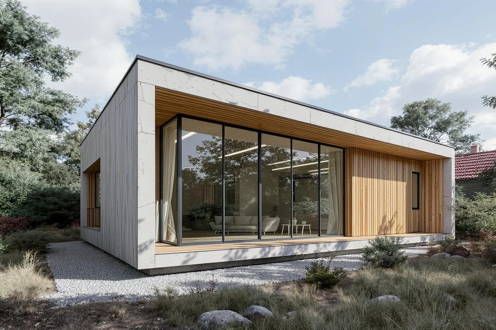
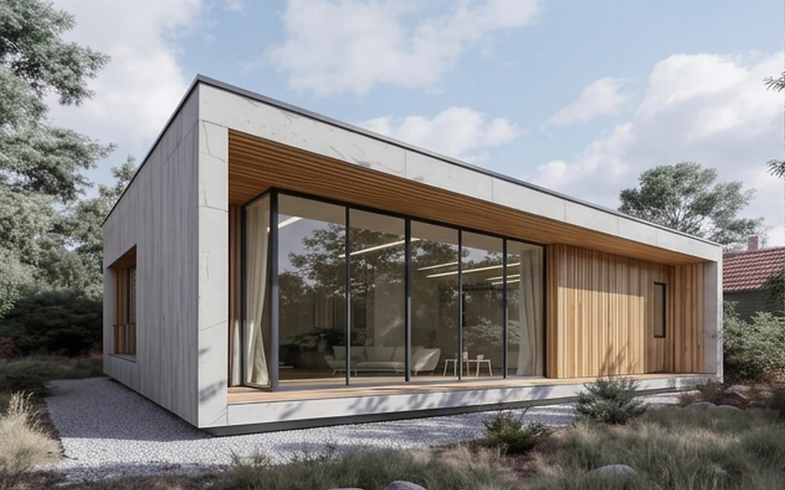
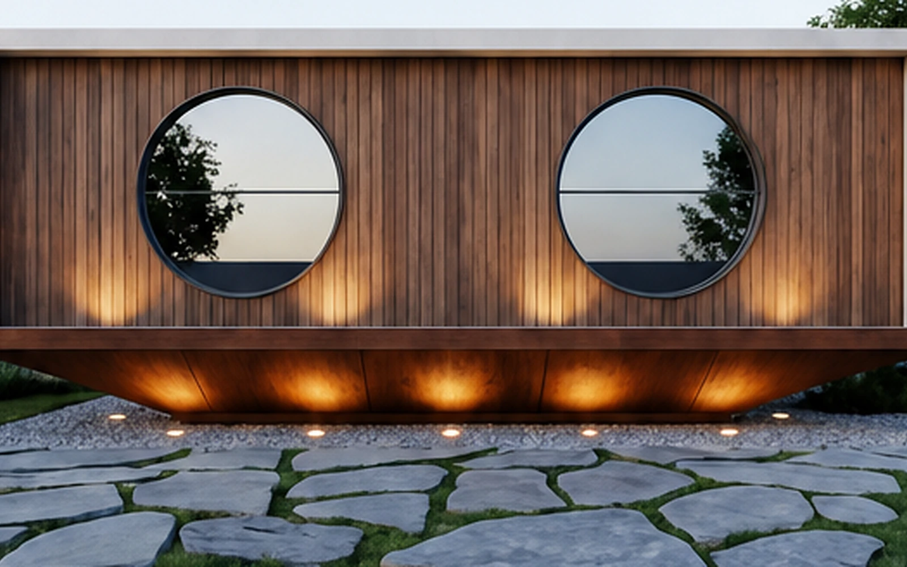
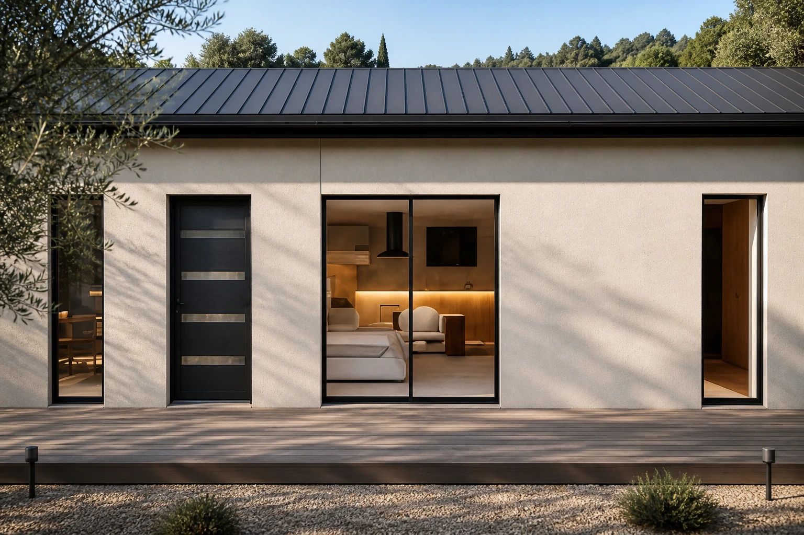
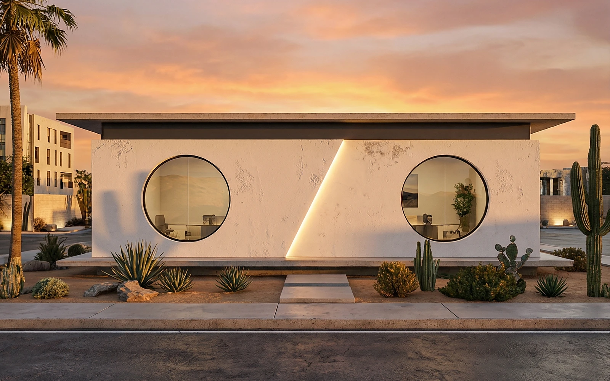
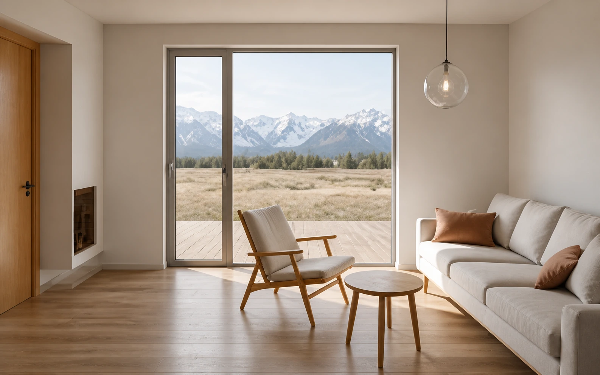
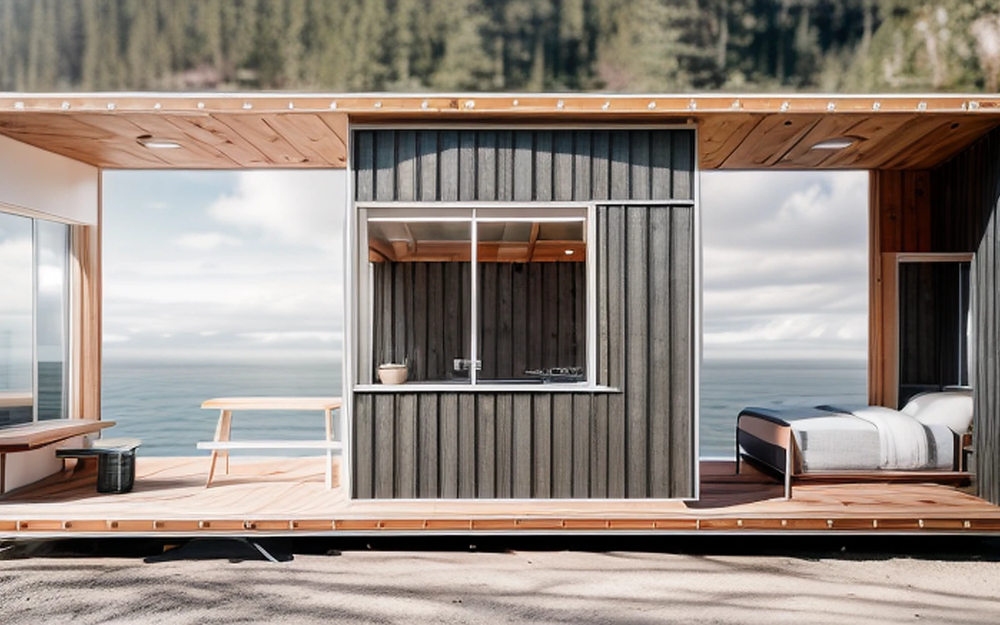

Basic
Esencial / precisa / abierta
Ficha de sistema
Lo esencial, muy bien medido.
Una casa contenida que concentra arquitectura, luz y relación con el exterior. La puerta de entrada al sistema Nanca.
- Escala
- Hasta 36 m²
- Lógica
- Crece por adición de unidades coordinadas, sin perder la claridad de la pieza original.
- Contexto
- Rural · urbano · huésped
- Definición
- Configuración por proyecto





